2026-10-19 · Electron + Host mock · 真实构建产物
截图来自 Electron Host mock，不是真实 Logseq 成品 UI。真实 Logseq 仍需按 Real-Logseq-Smoke-Test.md 做发版前人工确认。
Vitest 80 files / 718 tests passed
| OS | macOS 26.3.2 (Build 25D2150) |
| Electron | 42.11.15 |
| Chromium | 148.0.7778.280 |
| Node.js | 24.17.0 |
| Plugin | logseq-text-toolkit 1.2.0 |
| SDK floor | @logseq/libs 0.3.1+ / host 2.0.2 |
| Runner | scripts/e2e (Electron + Host mock) |
| 套件 | 通过 | 覆盖 |
|---|---|---|
| 主功能套件 | 13/13 | 插件注册、设置、选区工具栏、评论、BlockView、TaskProgress、Heatmap、Milestone、Summary、slash commands |
| Summary 专项 | 3/3 | 自定义日期范围、年度模板/页面名、同名总结安全替换 |
| HTML 阅读器 | 5/5 | 附件列表、文字标注、高亮、面板控制、Dashboard、持久化 |
| 旧 Host fallback | 2/2 | 无 onInputSelectionEnd；原生 textarea 选区 |
| SDK 静默 fallback | 2/2 | 暴露 SDK hook 但从不发事件；原生选区仍可用 |
| 功能 | 验证点 |
|---|---|
| 设置弹窗 | 7 个 Tab；BlockView Tab 可切换；保存成功；hit-test 在弹窗内 |
| 选区工具栏 | SDK onInputSelectionEnd → 工具栏 → 加粗 → updateBlock |
| 评论 | 工具栏评论项 → 弹窗 → 保存 → inline-comment |
| BlockView | list/table/gallery/board；Table 3 个 grid track；表格行 control 不再占用 grid 列；设置实时刷新 |
| TaskProgress | 1/2；tag-only 无 status 任务计入 todo |
| Heatmap | 年度/月度/周度切换；42 个 week cell；scheduled 日期属性 |
| Milestone | Initiation / Planning 两个阶段渲染 |
| Summary | GTD 生成、活跃块数、自动洞察、view=week 热力图宏、自定义范围、年度页面 |
| HTML 阅读器 | HTML 附件列表/预览；选区标注/备注；高亮/跳回；左侧/右侧/全屏；Dashboard；持久化 |
| Slash commands | TaskProgress / Heatmap / BlockView / Milestone 四条宏插入 |
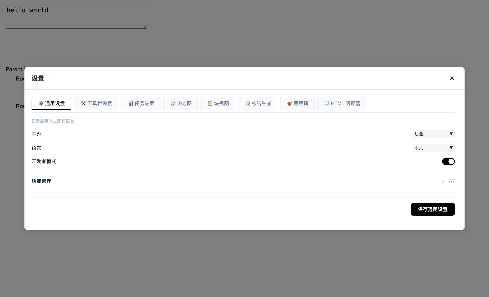
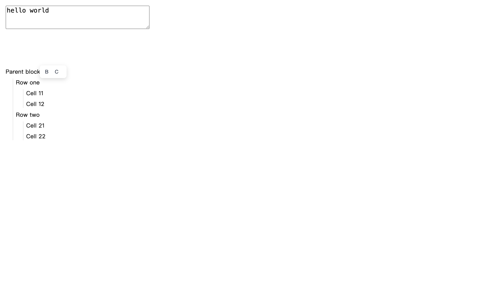
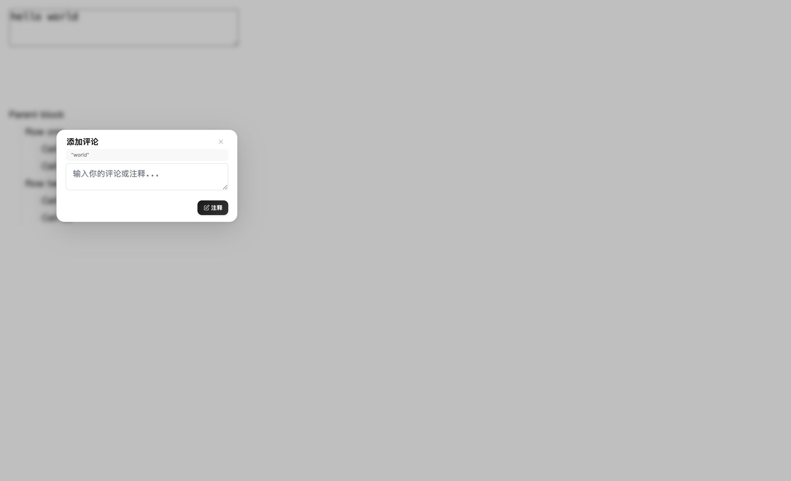
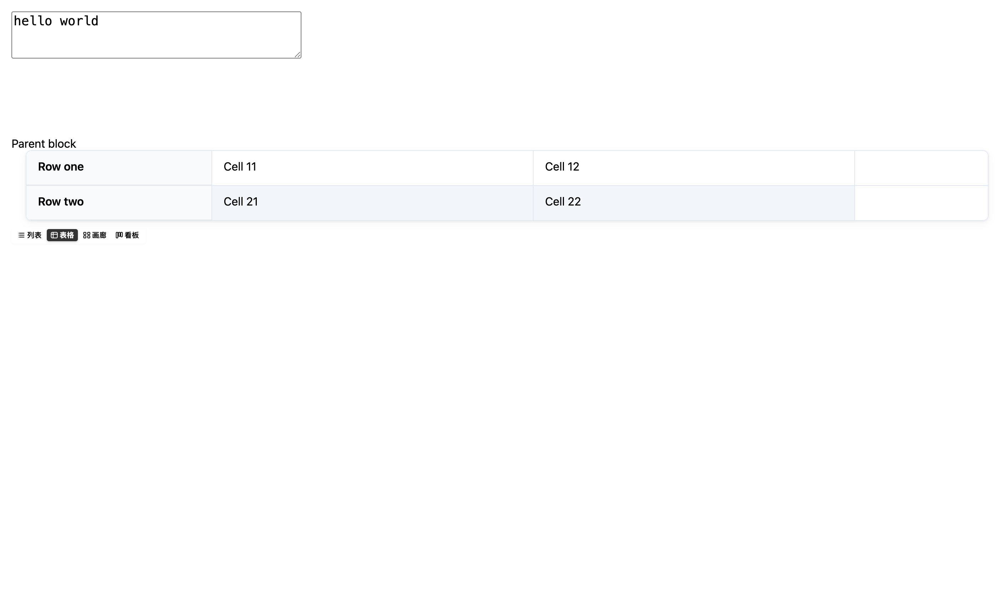
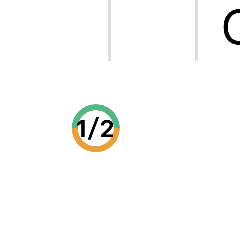
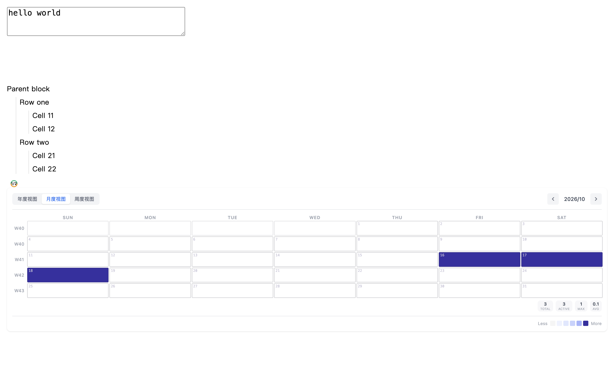
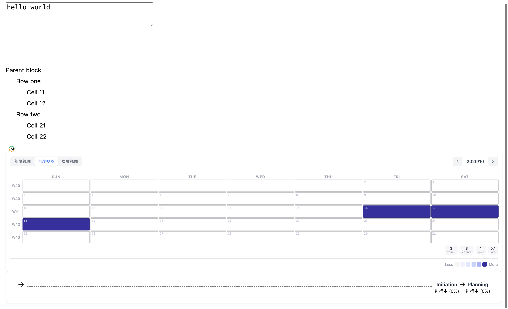
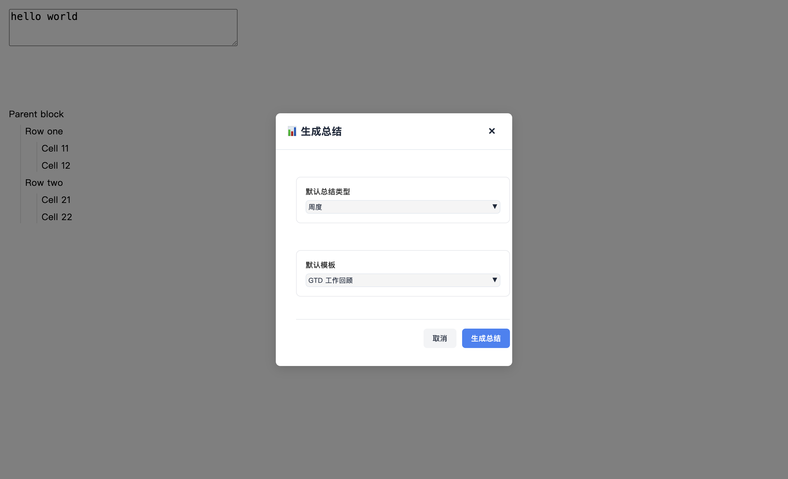
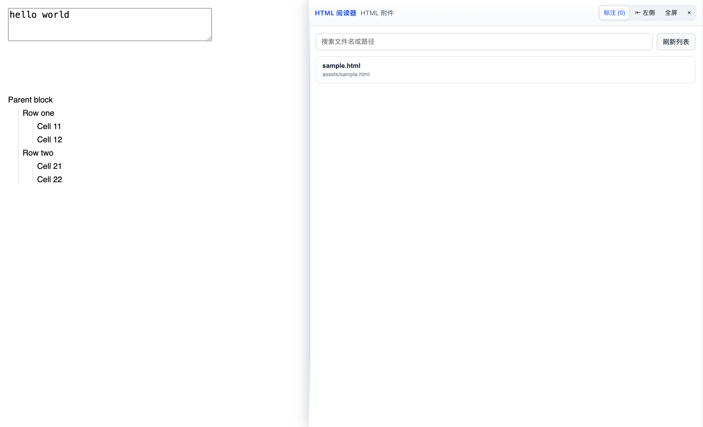
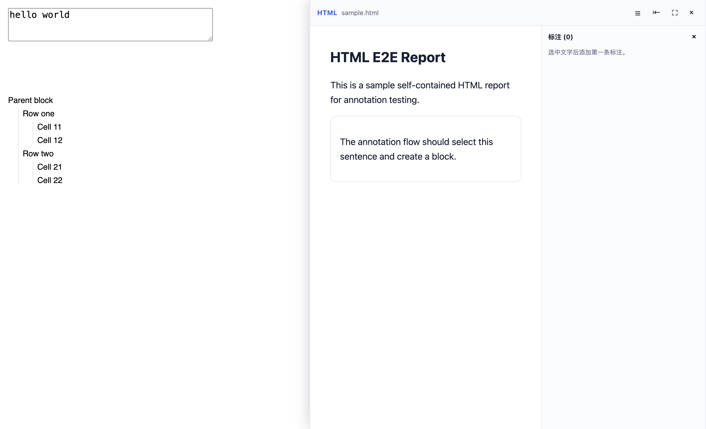
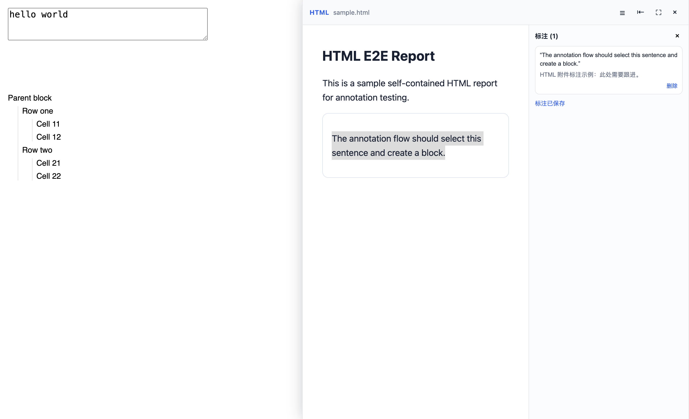
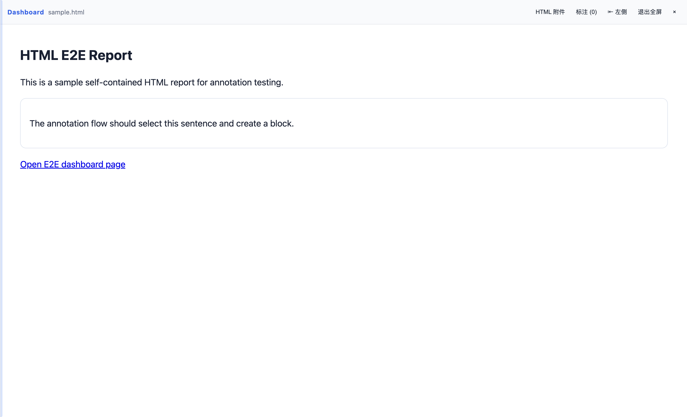
| 问题 | 影响 | 修复 |
|---|---|---|
Table 行 .block-control-wrap 直接参与 grid | 首列被 control 占用，单元格错位/换行 | 隐藏 table row 的 control wrap；E2E 新增 grid/control 断言 |
| Summary/Settings/Comment fixed 容器无 z-index | 后续主内容可能盖住弹窗点击区域 | 容器 z-index:10000 + overlay pointer-events:auto；E2E 新增 elementFromPoint 校验 |
npm ci npm i -D electron # 或设置 ELECTRON_BIN npm run e2e:no-build
无 Electron 时只跑单元/集成：
npm test
logseq query 验证；真实应用最终确认见 smoke checklist。